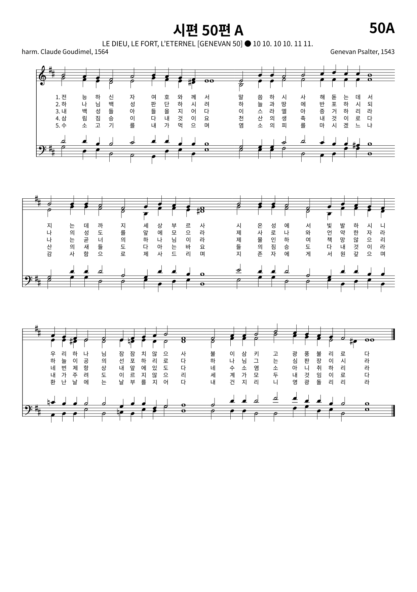

Psalm 50A
LE DIEU, LE FORT, L’ETERNEL [GENEVAN 50] · 10 10. 10 10. 11 11.
English title: The Mighty One, the LORD, Proclaims His Word
Tune: Genevan Psalter, 1543 · Harmony: Claude Goudimel, 1564 · Lyrics: Korean adaptation of Psalm 50 from the Korean Revised Version (AI draft adaptation · not yet theologically reviewed) · 5 stanzas
Psalm 50 is divided into 2 tunes: A B · This tune contains stanzas 1–5 of the Psalm 50 lyrics.
Score PDF MusicXML (for printing) MusicXML (for accompaniment, with prelude and repeats) Read Psalm 50 (Korean Revised Version)
Score
← Psalm 49 ListAccompaniment (in preparation)Psalm 50B →
Lyrics (Korean)
Stanza 1 (Ps. 1~3절)
전능하신 자 여호와께서
말씀하시사 해 돋는 데서
지는 데까지 세상 부르사
시온 성에서 빛 발하시니
우리 하나님 잠잠치 않으사
불이 삼키고 광풍 불리로다
전능하신 자 여호와께서
말씀하시사 해 돋는 데서
지는 데까지 세상 부르사
시온 성에서 빛 발하시니
우리 하나님 잠잠치 않으사
불이 삼키고 광풍 불리로다
Stanza 2 (Ps. 4~6절)
하나님 백성 판단하시려
하늘과 땅에 반포하시되
나의 성도를 앞에 모으라
제사로 나와 언약한 자라
하늘이 공의 선포하리로다
하나님 그는 심판장이시라
하나님 백성 판단하시려
하늘과 땅에 반포하시되
나의 성도를 앞에 모으라
제사로 나와 언약한 자라
하늘이 공의 선포하리로다
하나님 그는 심판장이시라
Stanza 3 (Ps. 7~9절)
내 백성들아 들을지어다
이스라엘아 증거하리라
나는 곧 너의 하나님이라
제물 인하여 책망 않으리
네 번제 항상 내 앞에 있도다
네 수소 염소 아니 취하리라
내 백성들아 들을지어다
이스라엘아 증거하리라
나는 곧 너의 하나님이라
제물 인하여 책망 않으리
네 번제 항상 내 앞에 있도다
네 수소 염소 아니 취하리라
Stanza 4 (Ps. 10~12절)
삼림 짐승이 다 내 것이요
천산의 생축 내 것이로다
산의 새들도 다 아는 바요
들의 짐승도 다 내 것이라
내가 주려도 이르지 않으리
세계가 모두 내 것임이로다
삼림 짐승이 다 내 것이요
천산의 생축 내 것이로다
산의 새들도 다 아는 바요
들의 짐승도 다 내 것이라
내가 주려도 이르지 않으리
세계가 모두 내 것임이로다
Stanza 5 (Ps. 13~15절)
수소 고기를 내가 먹으며
염소의 피를 마시겠느냐
감사함으로 제사 드리며
지존자에게 서원 갚으며
환난 날에는 날 부를지어다
내 건지리니 영광 돌리리라
수소 고기를 내가 먹으며
염소의 피를 마시겠느냐
감사함으로 제사 드리며
지존자에게 서원 갚으며
환난 날에는 날 부를지어다
내 건지리니 영광 돌리리라